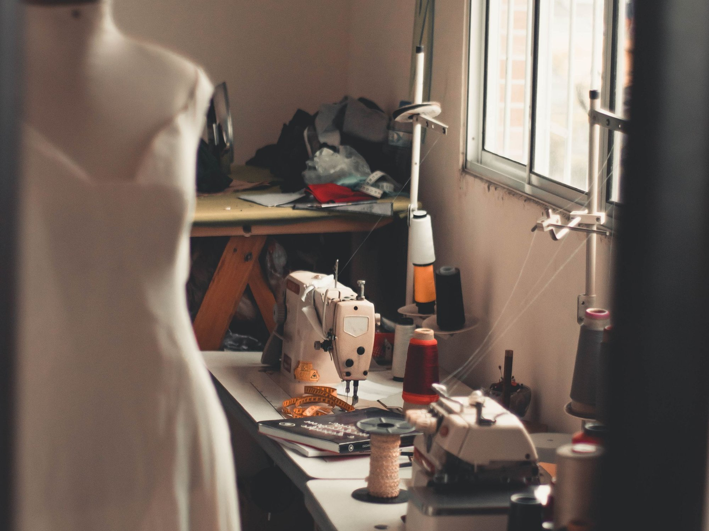
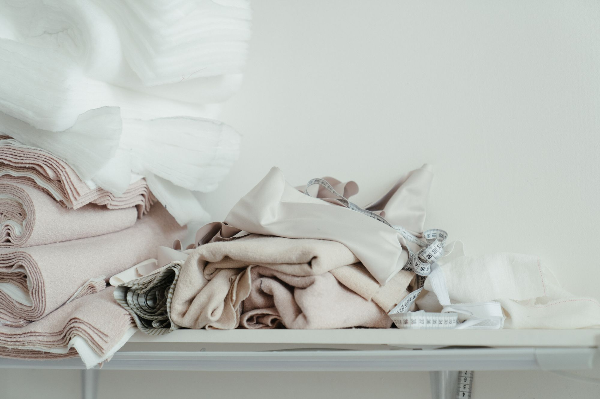
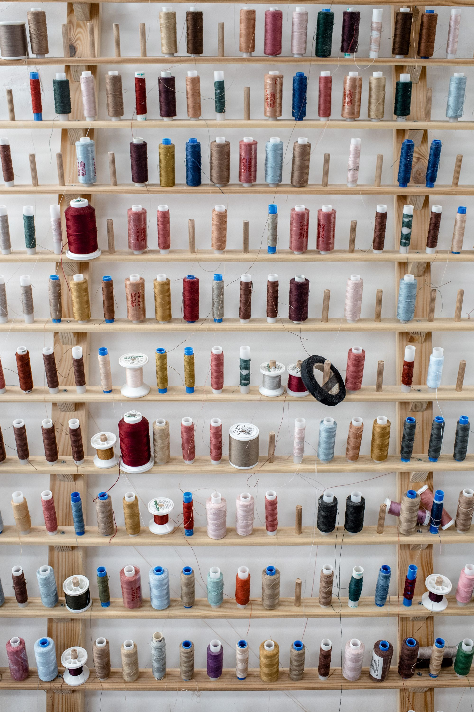
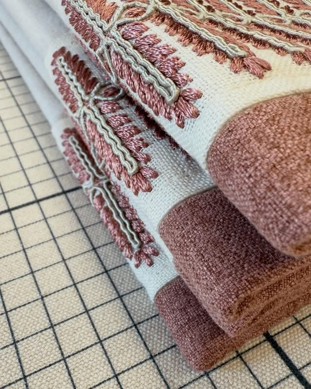
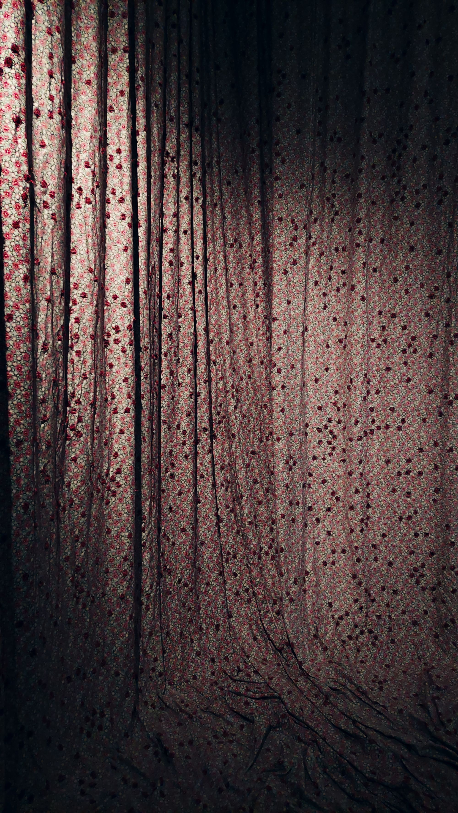
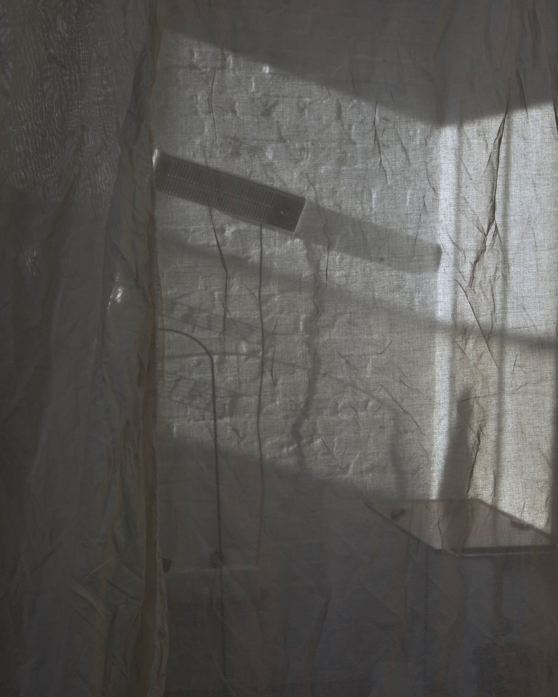

Nagy Mariann vagyok.
Belsőépítész végzettséggel tervezek, de a kezem soha nem engedte el a tűt: a függönyöket, párnákat és terítőket ma is én magam varrom a varrodámban. A Marie Creation abból a meggyőződésből született, hogy a jó tér nem díszlet, hanem a mindennapok kerete. Egy jól eső fény, egy kézre álló konyha, egy függöny, ami pont úgy esik, ahogy kell: ezek teszik az otthont otthonná.
Lakásokat, panziókat és vendégtereket egyaránt tervezek, mindent, amihez nem kell építési engedély. A textil pedig a védjegyem: nálam a tervezőasztal és a varrógép ugyanabban a műhelyben áll.
Nem katalógusból dolgozom. Minden terv és minden textil az adott térre, az ott élők szokásaira készül.
A gépi tökéletesség helyett a kézi munka melegét adom: látszik rajta, hogy ember készítette, és ez így van jól.
Nem hagyom magára a tervekkel. A felméréstől az utolsó függönykarikáig ott vagyok a folyamatban.




